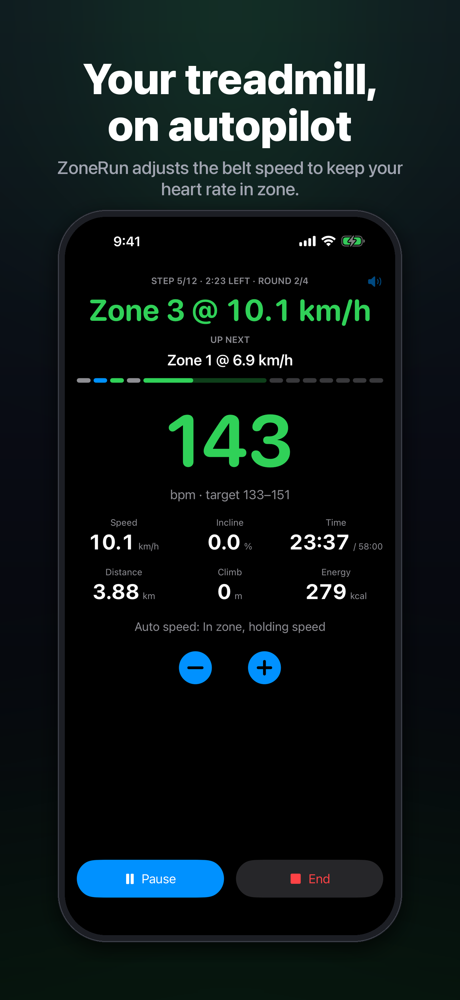
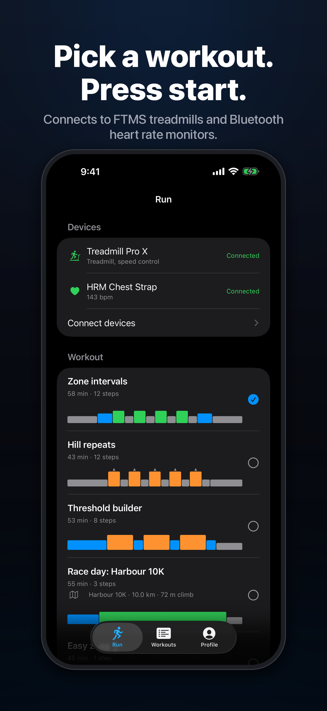
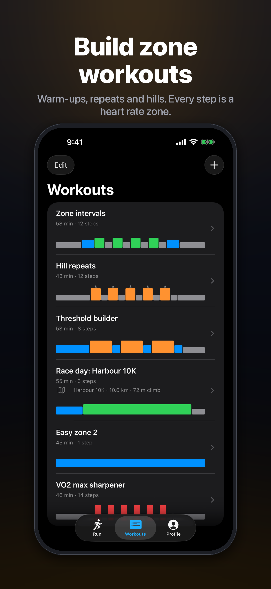
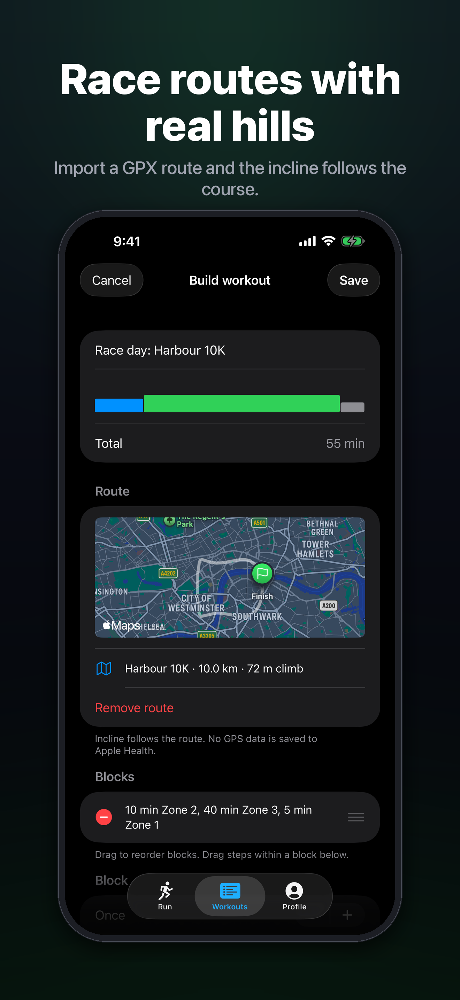
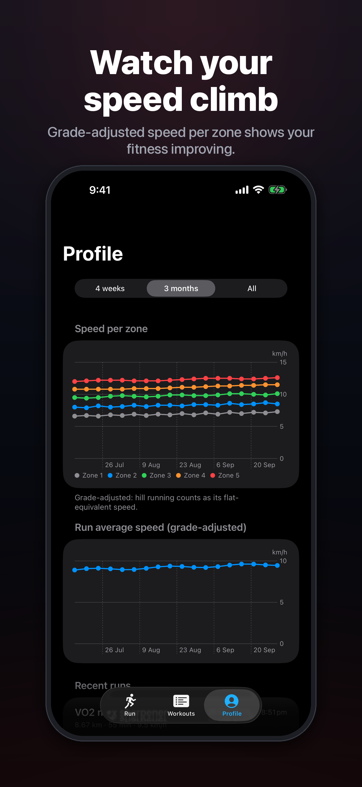
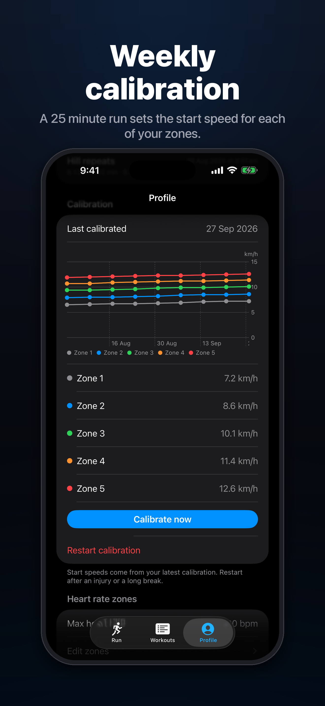

Your treadmill, on autopilot. ZoneRun steers the belt speed to keep your heart rate in zone.






Pick a workout, press start and focus on running.
ZoneRun nudges the belt up or down whenever your heart rate leaves the zone.
Build workouts from blocks and repeats. Every step is a heart rate zone with an optional incline.
A 25 minute run learns your speed in each zone, so every workout starts at the right pace.
Import a race route and the treadmill incline follows its hills, grade-adjusted to stay in zone.
Grade-adjusted speed per zone, run history and calibration trends on the Profile tab.
Spoken cues for step changes, countdowns, hills, splits and speed changes, over your music.
Every run is saved as an indoor running workout with heart rate, distance, speed, energy and climb.
Any Bluetooth FTMS treadmill and any Bluetooth heart rate monitor, chest strap or arm band.
Every feature, page by page, with screenshots. Made for App Review and anyone who wants to see the app before connecting a treadmill.
Answers to common questions, or get in touch.
A treadmill that supports Bluetooth FTMS (Fitness Machine Service) and a Bluetooth heart rate monitor, such as a chest strap or arm band.
Make sure Bluetooth is on and the treadmill isn't connected to another app, such as the manufacturer's app, Zwift or Kinomap. Close those apps, then tap Scan on the Connect devices screen. Some treadmills only advertise Bluetooth while their console is awake.
Your treadmill must allow speed control over FTMS. ZoneRun shows "speed control" under the treadmill name when it does. Some treadmills need you to press start on the console before they accept speed changes.
ZoneRun needs one calibration run to learn your speed in each heart rate zone. Start it from the Run tab. It takes 25 minutes: 5 minutes in each zone.
Go to Profile › Heart rate zones. Set your maximum heart rate to reset all zones, or adjust each zone on its own.
Open Settings › Health › Data Access & Devices › ZoneRun and turn on all categories.
Your treadmill's stop button and safety key always take priority. If the belt stops, the safety key is pulled or the treadmill disconnects, ZoneRun stops controlling the speed until you resume.
ZoneRun has no accounts, analytics or ads. Read the privacy policy.